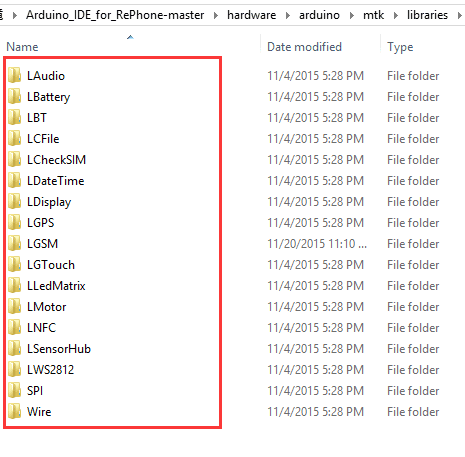

The combination of GSM module and GPS module is what makes RePhone Geo Kit brilliant. The kit allows you to obtain the real-time geographic position, altitude, travelling speed and time information at any time, and all-weather conditions, through GSM network (SMS). Also as a bonus, the Xadow GSM Breakout can provides you more possibilities hacking electronics.

For more info about this module please check on Xadow GSM+BLE Wiki Page.
| Microcontroller | MT2502 |
| MCU Core | 32-bit ARM7EJ-STM RISC processor |
| RAM | 4 MB |
| Flash Memory | 16 MB |
| Power Supply | 3.3 ~ 4.2V(no SIM)/3.5 ~ 4.2V(with SIM) |
| Power Consumption | 20mW/30mW/52mW @ standby(no radio)/standby(GSM)/standby(BT) |
| Quad-band | 850/900/1800/1900 MHz |
| GPRS | Class 12 modem |
| Clock Speed | 260 MHz |
| Connectors | 35 PIN Connector & 11 PIN Connector for Xadow Modules; JST 1.0 Connector for the battery |
| Interfaces | LCD, Audio, I2C, SPI, UART, and GPIOs etc |
| Dimensions | 25.37mm × 20.30mm / 1” × 0.8” |
For more info about this module please check on Xadow GPS v2 Wiki Page.
| Microcontroller | Kinetis KL02 |
| Core | ARM® 32-bit Cortex® -M0+CPU |
| Power Supply | 3.3 ~ 6 V (via breakout pins) |
| Flash | 32 KB |
| SRAM | 4 KB |
| Clock Speed | 48 MHz |
| Power Consumption | 18mA@Tracking, 21mA@Acquisition |
| Power Saving | Typ. 3mA@AlwaysLocateTM, 7uA@Backup
Mode, 180uA@Standby Mode |
| Channel | 22(Tracking) / 66 (Acquisition) |
| Update Rate | 1Hz(Default), up to 10Hz |
| Horizontal Position Accuracy | <2.5m CEP |
| Velocity Accuracy | <0.1m/s |
| Maximum Velocity | Max.515m/s |
| Cold/warm start with EASYTM | 215s/5s |
| Acquisition Sensitivity | -145dBm |
| Tracking Sensitivity | -163dBm |
| Operating Temperature | -40℃ to 85℃ |
| Protocols | NMEA 0183/PMTK |
| Antenna Type | Chip antenna |
| Interface | Interface with Xadow GSM+BLE through
I2C (7-bit address 0x05) |
| Dimensions | 25.37mm X 20.30mm / 1” × 0.8” |
For more info about this module please check on Xadow GSM Breakout Wiki Page.
| Dimensions | 25.37mm × 20.30mm / 1” × 0.8” |
The Xadow GSM+BLE integrates a Xadow 36 Pin connector and a Xadow 11 Pin connector. As the image shows here, if needed, you can connect the Xadow GSM+BLE to Xadow GSM breakout with a Xadow 36 Pin cable, but do bear in mind that the cable has to be inserted firmly and flat, and most importantly, keep the 'TOP' side upwards. The Xadow 11 Pin connector have much more flexible design, you can connect the Xadow GPS v2 and the mainboard with a Xadow 11 Pin ribbon cable in whatever way you want, again just make sure cable is firmly inserted.
Firstly you need to follow the instructions in the Arduino IDE for RePhone Kit to download the Arduino IDE for RePhone Kit as well as install the drivers. Then copy the following GPS testing code to your Arduino IDE for RePhone. Choose the board as "RePhone" and download it with the "MTK USB Debug Port".
#include <LGPS.h> #include <stdio.h> void setup() { Serial.begin(115200); Serial.print("GPS test.\r\n"); } void loop() { unsigned char *utc_date_time = 0; char buffer[50] = {0,}; if(LGPS.check_online()) { utc_date_time = LGPS.get_utc_date_time(); sprintf(buffer, "GPS UTC:%d-%d-%d %d:%d:%d\r\n", utc_date_time[0], utc_date_time[1], utc_date_time[2], utc_date_time[3], utc_date_time[4],utc_date_time[5]); Serial.print(buffer); sprintf(buffer, "GPS status is %c\r\n", LGPS.get_status()); Serial.print(buffer); sprintf(buffer, "GPS latitude is %c:%f\r\n", LGPS.get_ns(), LGPS.get_latitude()); Serial.print(buffer); sprintf(buffer, "GPS longitude is %c:%f\r\n", LGPS.get_ew(), LGPS.get_longitude()); Serial.print(buffer); sprintf(buffer, "GPS speed is %f\r\n", LGPS.get_speed()); Serial.print(buffer); sprintf(buffer, "GPS course is %f\r\n", LGPS.get_course()); Serial.print(buffer); sprintf(buffer, "GPS position fix is %c\r\n", LGPS.get_position_fix()); Serial.print(buffer); sprintf(buffer, "GPS sate used is %d\r\n", LGPS.get_sate_used()); Serial.print(buffer); sprintf(buffer, "GPS altitude is %f\r\n", LGPS.get_altitude()); Serial.print(buffer); sprintf(buffer, "GPS mode is %c\r\n", LGPS.get_mode()); Serial.print(buffer); sprintf(buffer, "GPS mode2 is %c\r\n", LGPS.get_mode2()); Serial.print(buffer); } delay(1000); }
Please be noted that: To obtain a better signal strength, you should put the GPS module outside the window/house in a open space. Also, after initiated the first time, it might take a while before it tracks down the satellites.
Now change the Port to MTK USB Modern Port(it's very important to so), you should be able to see the GPS info on the Serial monitor.
Playing with some example code would a good start if you are heading into some even more interesting project.
1. Simply setup your sketchbook location in the preference as where you install the Arduino IDE for RePhone, then you'll be able to see the example codes.
2. You may find the Arduino example coded manually for all the RePhone modules in the following path:
Arduino_IDE_for_RePhone-master\hardware\arduino\mtk\libraries


We’ve been looking for a better place where our backers (RePhone Users) can sit together, warmly and comfortably, have conversations about RePhone, discuss technical problems, share ideas/projects, and give feedback on the modules’ development in the future. And then here we go, the RePhone Community.
Now join us in the RePhone Community! Together we seek answers, make interesting stuff, care about each other, and share our experiences.
Some frequently asked questions in RePhone Community are collected and answered to the topic "Frequently Asked Questions of RePhone (FAQ)" , the topic will be kept updating whenever a new FAQ comes out.
Please go the Wiki page Xadow GPS v2 for more info.
Copyright (c) 2008-2016 Seeed Development Limited (www.seeedstudio.com / www.seeed.cc)